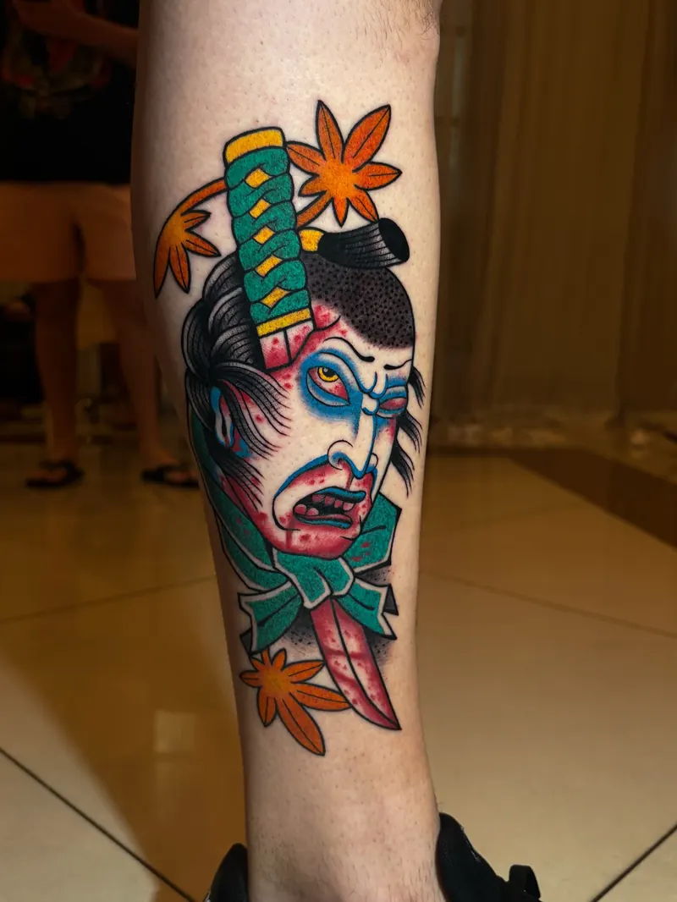
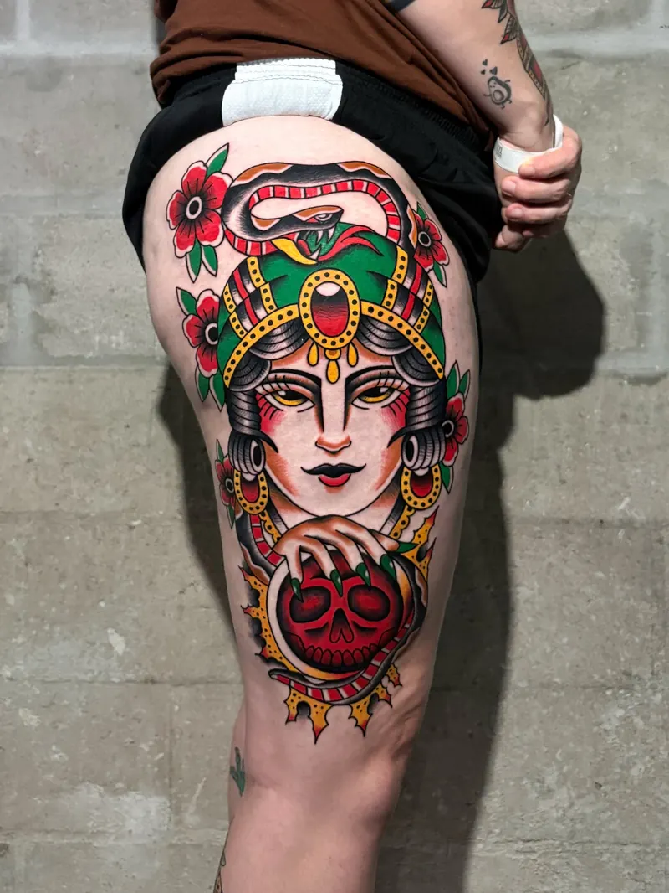
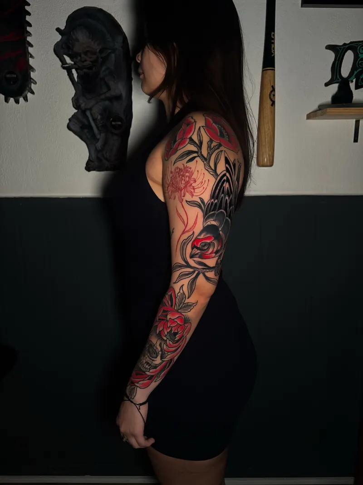
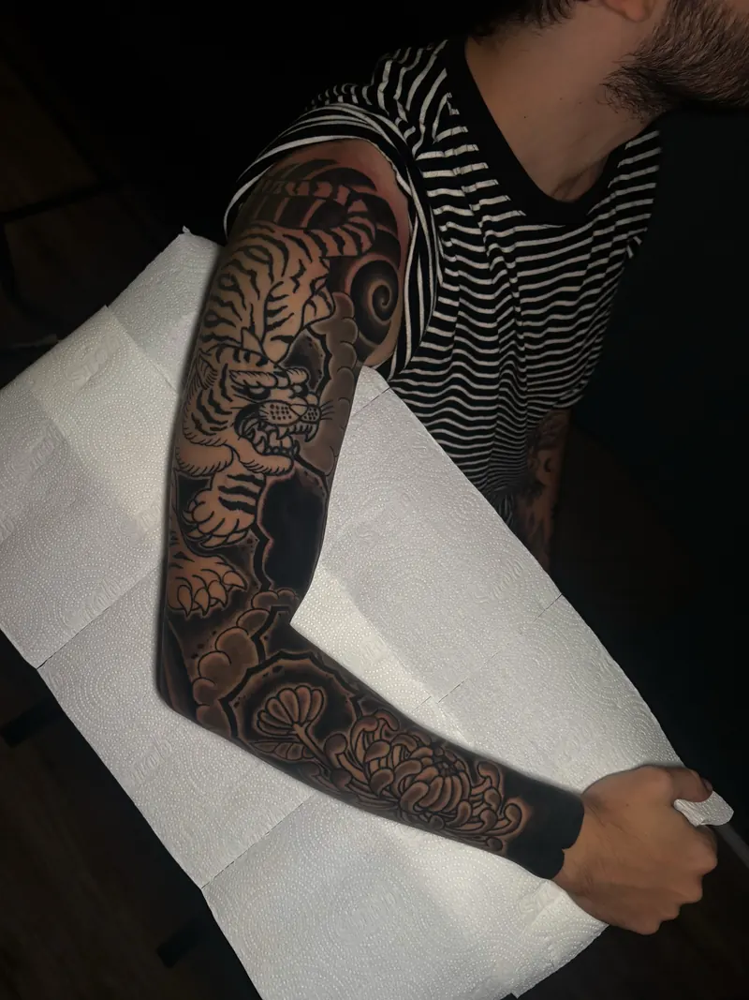
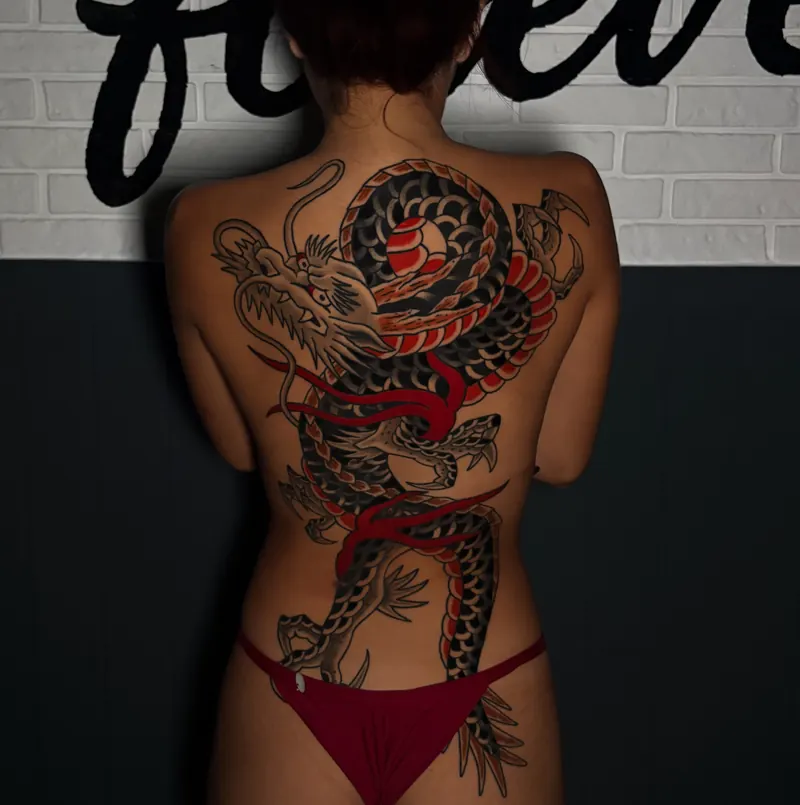
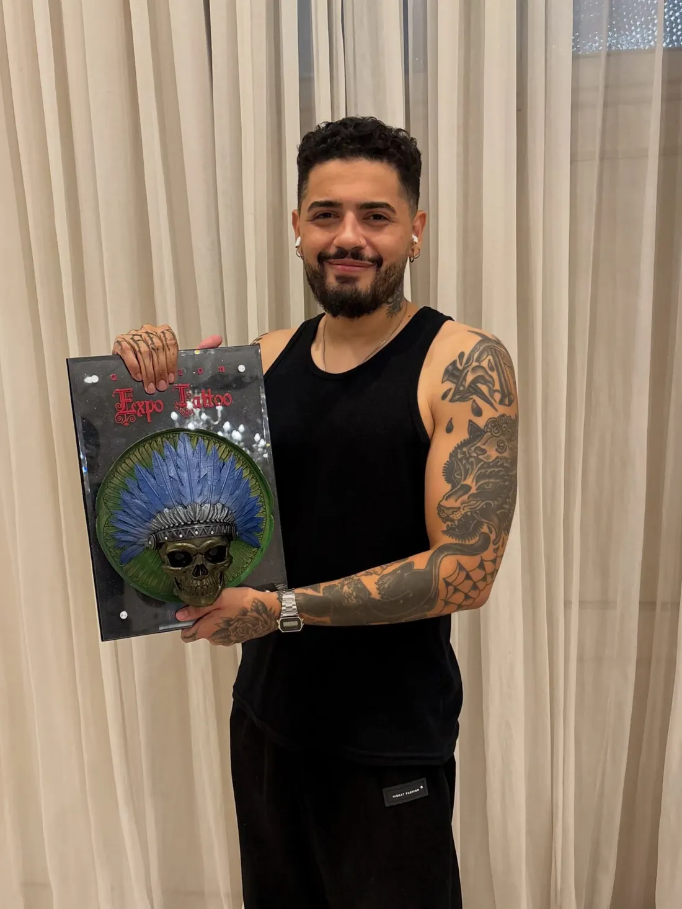
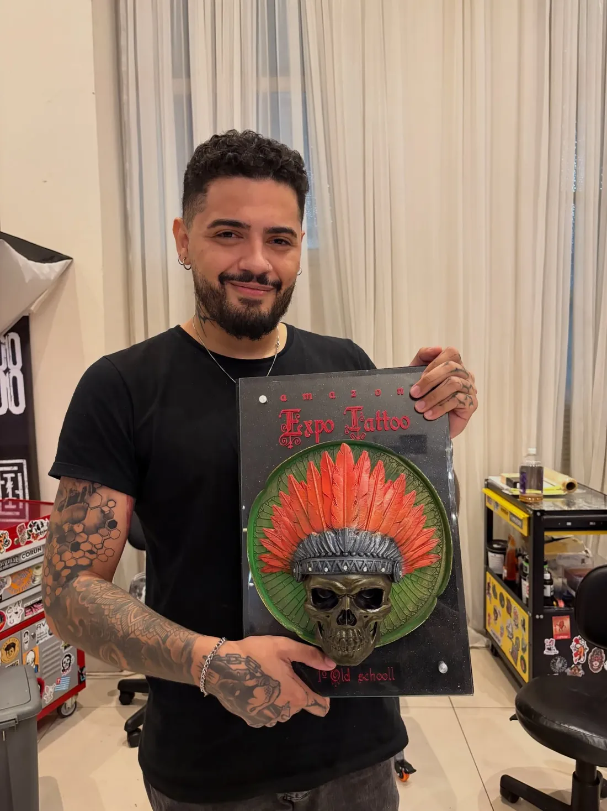
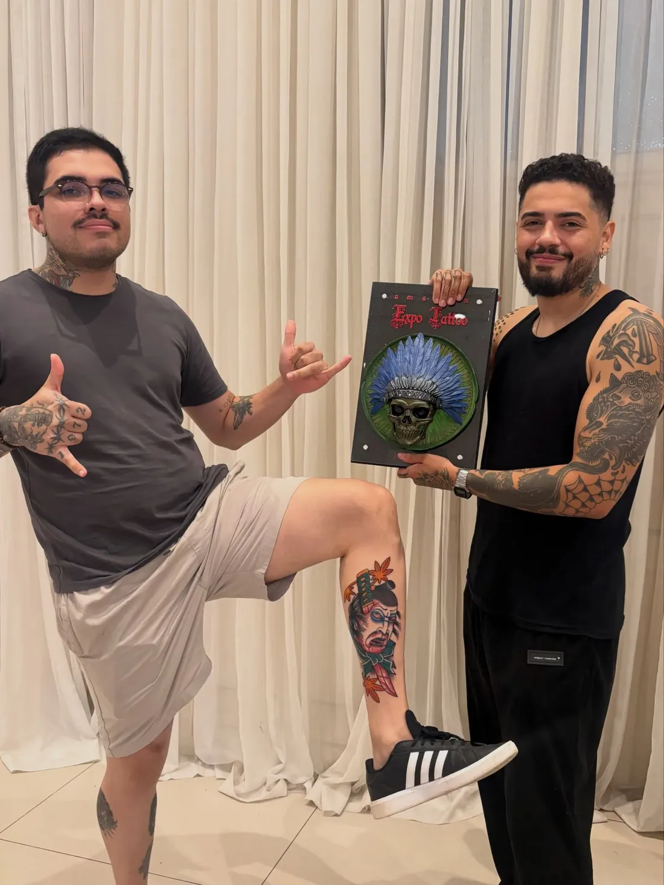
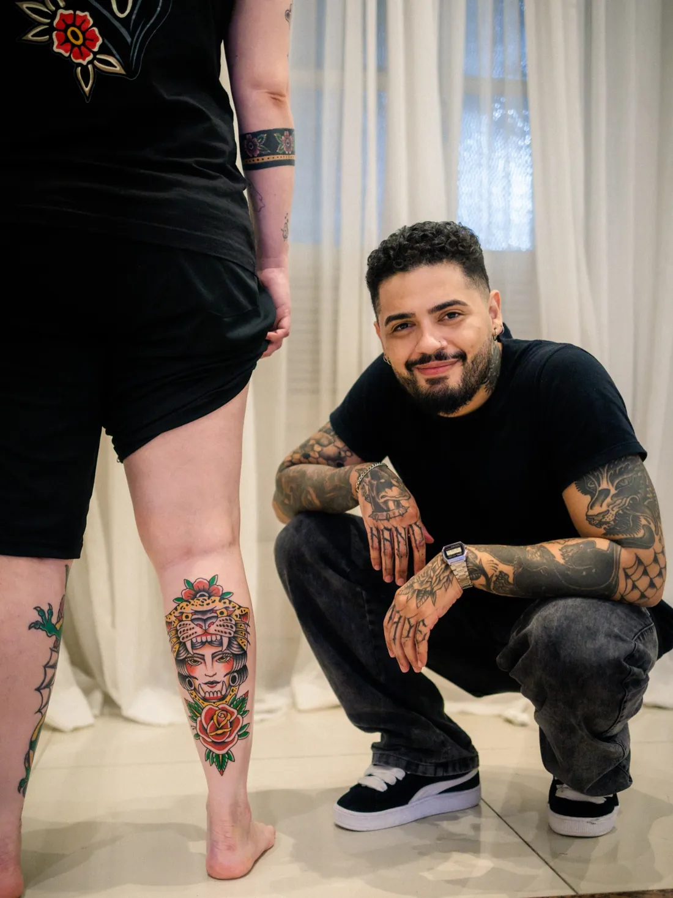

01
Old School
Contornos grossos, cores chapadas e motivos clássicos que atravessam gerações. Tatuagem Old School em Manaus, com leitura limpa e pensada para durar.
Ver trabalhos →Estúdio de tatuagem · Manaus, AM
Old School, Neo Tradicional e Oriental. Traço firme, cor intensa e peças pensadas para durar a vida inteira, no bairro Dom Pedro.




Especialidades
Tatuagem Old School, Neo Tradicional e Oriental em Manaus: escolha o universo e desenhe sua peça com o Basa.
Contornos grossos, cores chapadas e motivos clássicos que atravessam gerações. Tatuagem Old School em Manaus, com leitura limpa e pensada para durar.
Ver trabalhos →A base tradicional com mais ilustração, variação de traço e paleta ampliada. Tatuagem Neo Tradicional em Manaus, com personalidade e acabamento refinado.
Ver trabalhos →
Dragões, tigres, flores e nuvens que acompanham a anatomia do corpo. Tatuagem oriental em Manaus em peças de grande porte e fechamentos.
Ver trabalhos →Portfólio
Fotos de peças feitas no estúdio. Toque em uma imagem para ampliar.
Nenhum trabalho neste filtro ainda.
Bastidores
Vídeos do dia a dia do trabalho no estúdio. Toque para assistir.
Sobre o Basa
A Basa Tattoo é um estúdio em Manaus, no bairro Dom Pedro, dedicado a tatuagens Old School, Neo Tradicional e Oriental. Cada peça nasce de conversa, desenho autoral e cuidado com a anatomia de quem vai carregá-la.
A história do Basa na tatuagem será contada aqui.
Texto oficial em brevePercurso e atuação ao longo dos anos.
Texto oficial em breveComo o traço amadureceu nos estilos que ele domina.
Texto oficial em breveVisão sobre a arte da tatuagem e suas inspirações.
Texto oficial em breveReconhecimento
Registros de eventos e reconhecimentos ao longo da trajetória do Basa.




Localização e contato
Venha conversar sobre sua próxima tatuagem. O agendamento é feito direto com o Basa.